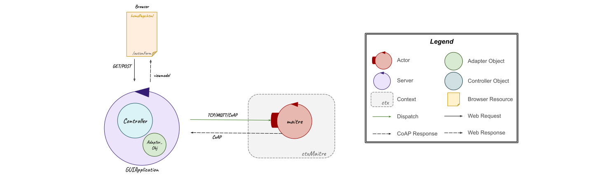
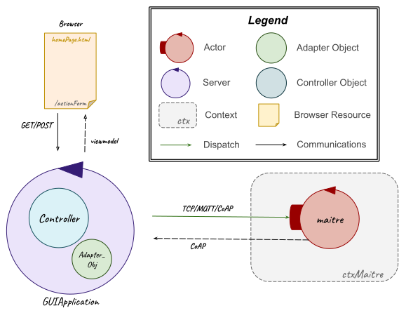
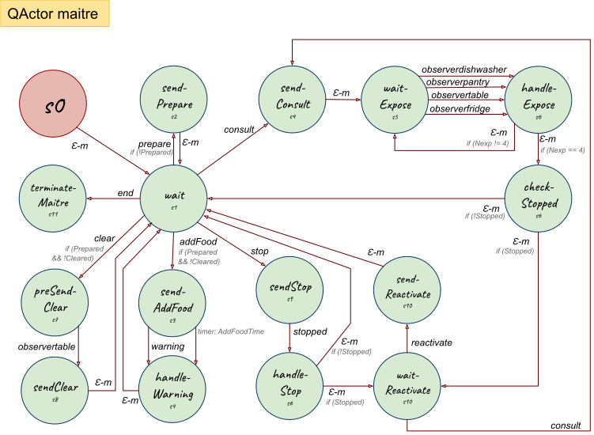
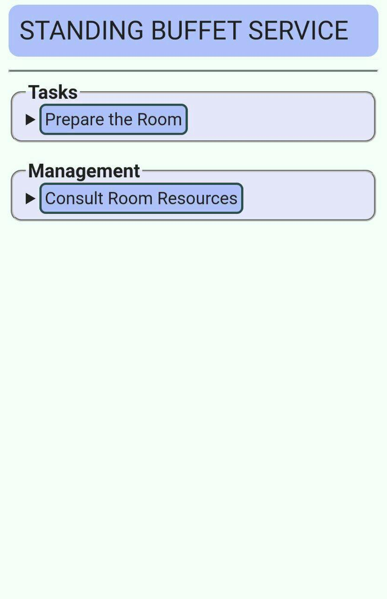
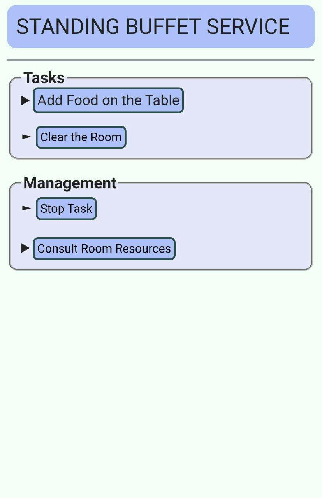
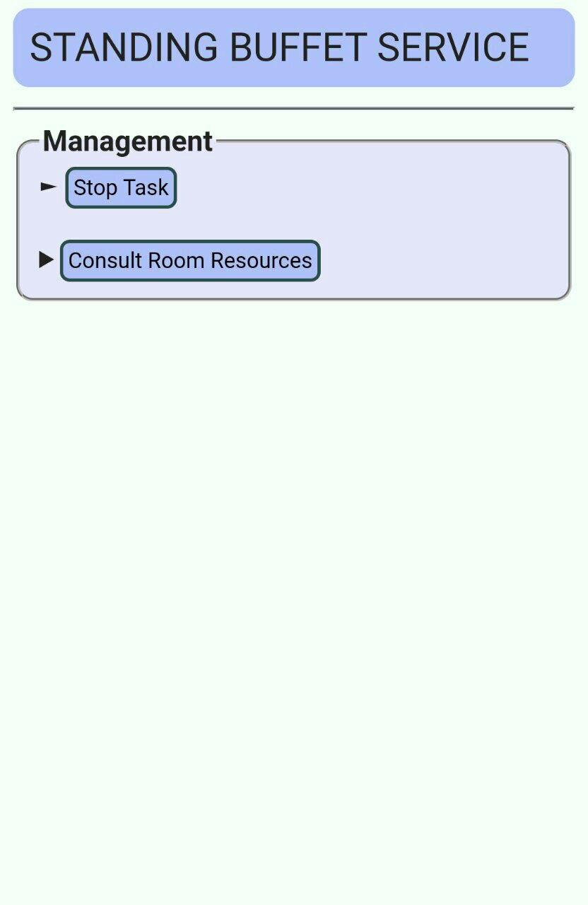
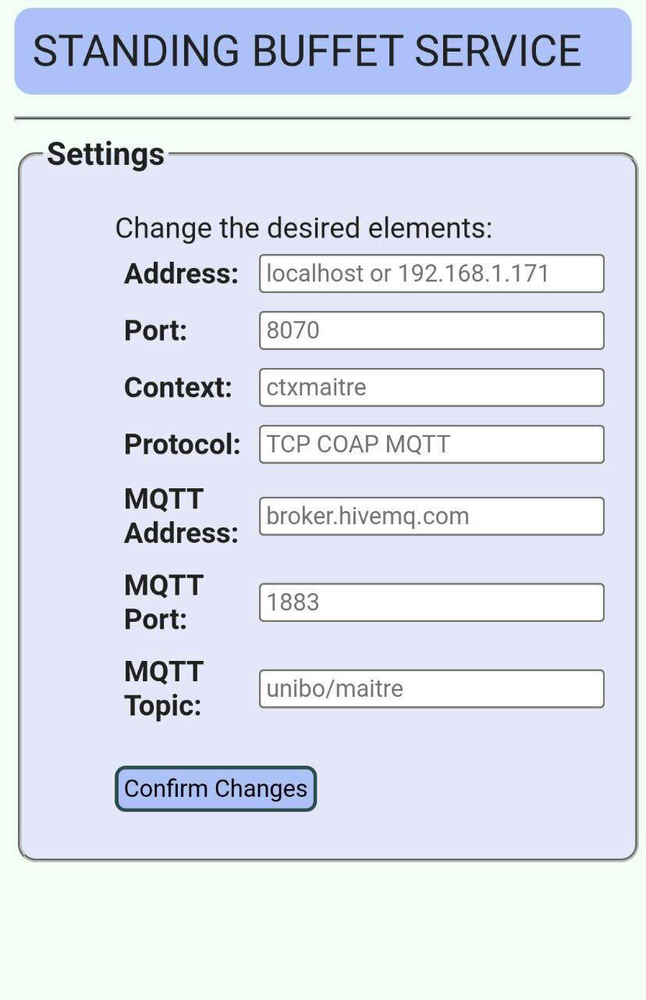
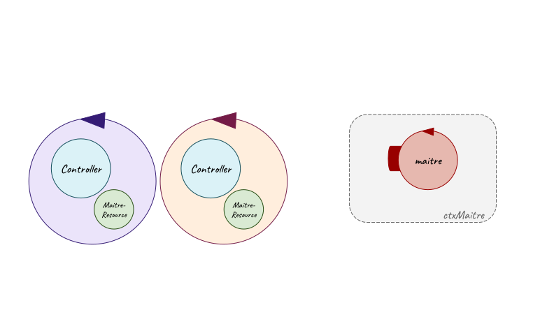

Introduction
The starting point for this SPRINT is the resulting model from the previous Sprint 2:| Machine Understandable Architecture Model | A Possible Graphic Representation |
|---|---|
|
Sprint 2 model.qak |
 
|
Goal
- GUI for
maître's smartphone software
Problem Analysis
GUI for Maître's Smartphone Software
By requirements, the user (To do that, as already said in the initial problem analysis, the software running on the
Therefore, to to solve this sprint goal, the main problems which must be addressed are:
- how to change the mock
maitre actor in a non-mock actor to receive commands in order to allow the user to interact with it through the GUI; - which architecture could be used to represent the system;
- how to realize the GUI as a web application;
- how the GUI (web application) and the
maitre actor must communicate.
Maitre
To redesigned the- its behavior could be assimilated by the GUI; but this is not the most adaptive solution because it fixes the
maitre actor behavior with the GUI preventing the interaction with a different interface mechanism free by this behavior and representing an obstacle for possible future extensions; - the
maitre actor could be a non-mock actor, which maintains its behavior with the other system actors, but it can also receive external commands (in this case from the GUI) as long as the interface mechanism supports the same type of messages exchange.
System Architecture
This application could be developed using the MVC (Model-View-Controller) pattern and making sure the system architecture respects the hexagonal architecture, which allows the communications between the front-end and the back-end by inserting an adapter object: in this way, the web application (front-end) can communicate with theFor example, the user (
GUI - Web Application
This web application could be realized using Spring framework which provides a good support to web application development and to the MVC pattern for the system architecture proposed above.Communications
As already said above, the adapter object allow the communications between the two parts (front-end and back-end); this can be done in different ways through different protocols (TCP, MQTT, CoAP).After a careful evaluation, this could be realized using:
- the TCP, MQTT or CoAP protocol for the communication to the
maitre actor; - the CoAP protocol for the communication from the
maitre actor, so to make possible for everyone to observe its state.

Test Plans
With reference to the initial problem analysis test plans, below it's reported a functional tests planning related to the goal of this sprint:- Tests of all the communications between entities;
- Tests of the mutual exclusion of
tasks and of their order of execution; - Tests of the stop and reactivate commands that can be used by
Maître de salle only when there is a runningtask .
Project
With regard to the problem analysis about this sprint, in this design phase it has been necessary to redesign theMaitre
To not be anymore a mock actor, as said in the problem analysis about this goal, the- prepare(
Crockery ,Food ), whereCrockery andFood are empty string or a list respectively of crockery and food (in case the user (Maître de Salle ) defines through the GUI the elements for thetask Prepare the room , as proposed in the initial problem analysis): in the first case, as in the previous sprints, themaitre loads the default elements from the prolog file (Prepare.pl). Then it sends a preparedispatch to therbr specifing the (default or new) food and crockery; - addFood(
FOOD_CODE ), whereFOOD_CODE is thefood-code defined by the user (Maître de Salle ) for thetask Add Food , as required in requirements text and as proposed in the initial problem analysis: after receiving this command, themaitre sends an addFoodrequest to therbr specifing theFOOD_CODE ; - clear: as in the previous sprints, the
maitre sends a consultdispatch to thetable to know the items (crockery and food) to remove and then it sends a cleardispatch to therbr specifing those elements; - consult: as in the previous sprints, the
maitre sends a consultdispatch to all the resources actors and waits for their answers; - stop: as in the previous sprints, the
maitre sends a stoprequest to therbrwalker and, only when the latterreply with stopped(true ), then themaitre waits for a reactivatedispatch . Here, it has been added the possibility to wait also a consult, but after the execution of this command, it's checked if it was in stop state and then themaitre waits again for a reactivate or consultdispatch ; - reactivate: as in the previous sprints, it sends a reactivate
dispatch to therbrwalker ; - end: it terminates itself.
| Machine Understandable Models | A Possible Graphic Representation |
|---|---|
|
|
 |
| Moore State Machine Diagrams | |
  |
FoodConsumer
In this sprint theIn future, it could be improved making it not anymore a mock actor and redesigning it to better manage the food consumption.
MaitreGUI
To realize the GUI, as a web application, for theIn particular, it has been realized, starting from Spring Boot, a Gradle project using the dependencies Spring Web, Spring Boot DevTools and Thymeleaf (a modern server-side Java template engine for both web and standalone environments, capable to inject its logic into template files like HTML). (Useful the guides for Spring Boot and for Thymeleaf).
Mainly, with regard of what said in the problem analysis about this sprint, this project contains in:
- src/main/kotlin/it/unibo/maitreGUI:
- CoapSupport.kt, which is a support for CoAP connection;
- MaitreResource.kt, that is an adapter object which provides methods to send messages (
dispatch ) to themaitre and to read its state update via CoAP usingCoapSupport ; - Controller.kt, that is a Spring controller which reads and manages the informations received via HTTP GET
request from the view (HTML files), usesMaitreResource to communicate withmaitre and returns the right HTML page. - src/main/kotlin/it/unibo/connQak:
- sysConnKb.kt, used to take and set the values/paramenters for the communications between
MaitreResource andmaitre ; - connQakBase.kt, which works as a factory class to generate a class to sends messages to an actor (in this case the
maitre ) using the TCP (by default), MQTT (implemented here but notmaitre side) or CoAP protocols. In this regard, it is provided a class for each type of connection.
| MaitreGUI | MaitreGUI_page2 | MaitreGUI_page3 | Settings |
|---|---|---|---|
MaitreGUI.html |
MaitreGUI_page2.html |
MaitreGUI_page3.html |
Settings.html |
Scrivi in controller : reindirizzamento pagina!
A possible graphic representation of the interaction between GUI (maitreGUI project) and

Testing
For this sprint, no significant tests are made because the tests planned during the test plan phase about the behavior and the interactions between maitre and other system actors have already been carried out in the previous sprints. Otherwise, regarding the behavior and the interaction/relationship between maitre and the GUI (maitreGUI), this can be visually?? verified by running the project and the web application/GUI/maitreGUI and sending/trying to send commands to the maitre.For this sprint no significant test are made because the behavior and the interactions between maitre and other system actors have already been carried out/tested in the previous sprints; while, regarding the behavior and the interaction/relationship between maitre and the GUI (maitreGUI), this can be tested/verified sending/trying to send commands to the maitre through the web application.
Below there are exposed some tests made for this sprint project:
- MutExTaskMaitreTest.kt
- Tests about the mutual exclusion of
tasks and of their order of execution:- PrepareAddFoodClearTest: after the send of prepare, addFood and clear commands in this order to the
maitre , it's verified that the latter actor receives and manages (starts to execute the related tasks) all these commands with success. In particular, this test:- Sends a prepare
dispatch to themaitre ; - Checks that prepare
dispatch has success/have been correctly received (che il maitre lo riceva/accetti?!); - Sends an addFood
dispatch to themaitre ; - Checks that addFood
dispatch has success; - Sends a clear
dispatch to themaitre ; - Checks that clear
dispatch has success.
- Sends a prepare
- FailAddFoodTest: after the send of an addFood command to the
maitre before sending a prepare command, it's verified that the latter actor doesn't manage this command/ it's verified that the operation fails. In particular, this test:- Sends an addFood
dispatch to themaitre ; - Checks that addFood
dispatch fails/maitre doesn't manage this command.
- Sends an addFood
- FailClearTest: after the send of a clear command to the
maitre before sending a prepare command, it's verified that the latter actor doesn't manage this command/ it's verified that the operation fails. In particular, this test:- Sends a clear
dispatch to themaitre ; - Checks that clear
dispatch fails/maitre doesn't manage this command.
- Sends a clear
- PrepareAddFoodClearTest: after the send of prepare, addFood and clear commands in this order to the
Regarding the behavior and the interaction/relationship between maitre and the GUI (maitreGUI), this can be visually?? tested/verified sending/trying to send commands to the maitre through the web application.
non sono stati fatti in quanto il maitre/il funzionamento del sistema era già stato testato negli sprint precedenti; mentre per quanto riguarda la parte di GUI, questa può essere testata provando a inviare comandi al maitre tramite la web application. These tests are used to test the internal components of this sprint project and not the externals, like the basicrobot. The virtual robot movements, commanded by the basicrobot, can be visually verified by running the project and the WEnv. These tests are executed on a single context (ctxsystem) and to execute them, it's necessary to comment the maitre, because it is a mock client and it could interfere with tests.
- Tests of all the communications between entities;
- Tests of the mutual exclusion of
tasks and of their order of execution; - Tests of the stop and reactivate commands that can be used by
Maître de salle only when there is a runningtask .
Model of System's Logical Architecture
| Machine Understandable Architecture Model | A Possible Graphic Representation |
|---|---|
|
Sprint 3 model.qak |
 
|
Deployment
The deployment of the application for the virtual robot can be done at the same way of the deployment explained in Sprint 1.For this sprint it has been introduced again a new scene (sceneConfig.js) where mobile obstacles are fixed out of the
If it should be executed the mapping operation, this can be done at the same way of the deployment explained in Sprint 2.
After this, it must be executed the maitreGUI project with Gradle:
gradle bootRunAs said before in design phase, it has been added the possibility to change the paramenters for the connection between
Otherwise, the application could be opened in a browser at
SCRUM Context
SPRINT Sequence
After this Sprint and according to the Product Backlog, listed after the problem analysis, a possibile set of next Sprint could be:- SPRINT 4
- Deploy on Raspberry
Prepare the room task : execution by the real robotAdd Food task : execution by the real robotClear the room task : execution by the real robot- Tests